概述
每家 TailTopia 合作宠物店都有一个 6 位数字邀请码，例如 000035。
顾客在 TailTopia App 里填写这个码，就与该门店绑定。
绑定后，顾客在 App 商城（Toko）的每笔购物都会给门店带来返佣。
门店只有在与 TailTopia 合作期间才能获得返佣；门店取消合作或关闭后，之后的订单不再产生返佣。合作结束前已经产生的返佣（待结算和可提现）照常支付。
一个 App 账号只能绑定一家门店，绑定后不能更换、不能解绑。
门店（店主）篇
在哪里看本店邀请码？
登录 TailTopia 商家平台（merchant.tailtopia.id），底部导航的「Komisi」（返佣）和「Akun」（账户）两页都能看到本店邀请码，点「Salin」（复制）即可复制；同一处还显示本店当前的返佣比例。
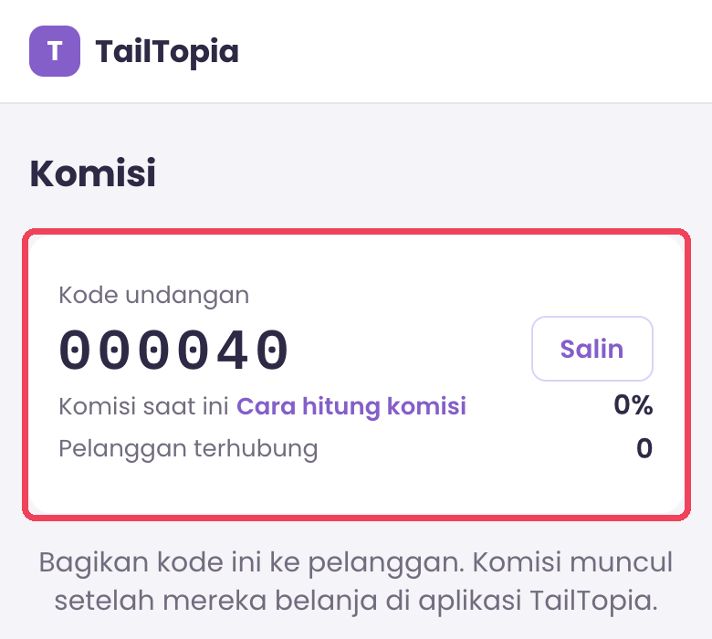
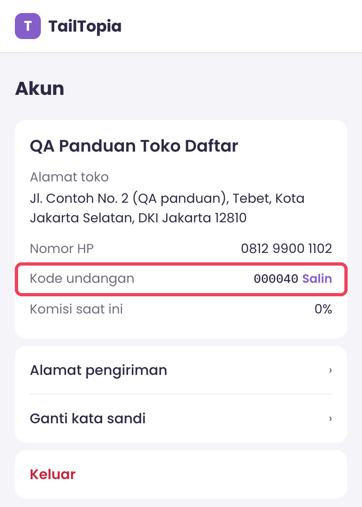
邀请码在门店注册审核通过后由系统自动分配；审核中或被驳回时还没有邀请码。邀请码不能自选，也不能修改。
怎么引导顾客绑定
把邀请码打印出来贴在收银台，或通过 WhatsApp 发给熟客。
按下方「顾客篇」的步骤带顾客操作，不到 1 分钟即可完成。
请顾客在购物之前先填码。
哪些订单算返佣
只算 App 商城（Toko）的商品订单；问诊、PawCoin 充值、AI 解锁等不算。
顾客绑定之前下的单不算，即使是绑定之后才付款。
只有门店与 TailTopia 合作期间才能获得返佣。
门店取消合作或关闭时
合作结束后的顾客订单，不再给门店返佣。
合作结束前已经产生的返佣照常支付：可提现的直接给，待结算的等结算后再给。门店此时已无法登录平台，提现请通过 WhatsApp 联系 TailTopia 运营。
新顾客无法再用这个码绑定（会提示码无效）；已绑定的顾客仍绑定在本店，不能改绑到别的门店。
顾客篇：如何填写门店邀请码
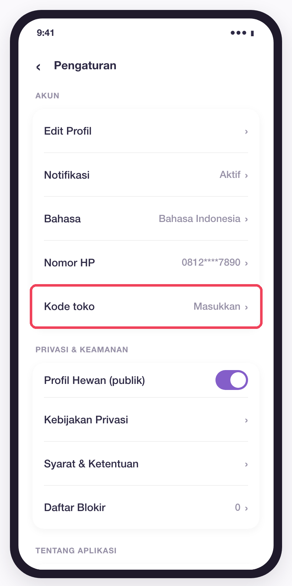
Buka aplikasi TailTopia, masuk ke tab Saya, lalu ketuk ikon roda gigi di kanan atas untuk membuka Pengaturan. Di grup AKUN, ketuk Kode toko.
打开 TailTopia App，进入「Saya」（我的）Tab，点右上角齿轮图标进入「Pengaturan」（设置）；在 AKUN（账号）分组里点「Kode toko」（门店码）。
Jika baris ini belum ada, perbarui aplikasi ke versi 1.4.1 atau lebih baru.
如果没有这一行，请先把 App 更新到 1.4.1 或更高版本。
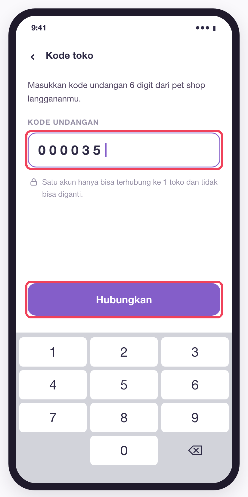
Masukkan 6 digit kode dari pet shop, lalu ketuk Hubungkan. Tombol baru aktif setelah 6 digit lengkap.
输入门店给的 6 位数字码，点「Hubungkan」（绑定）。输满 6 位后按钮才可点。
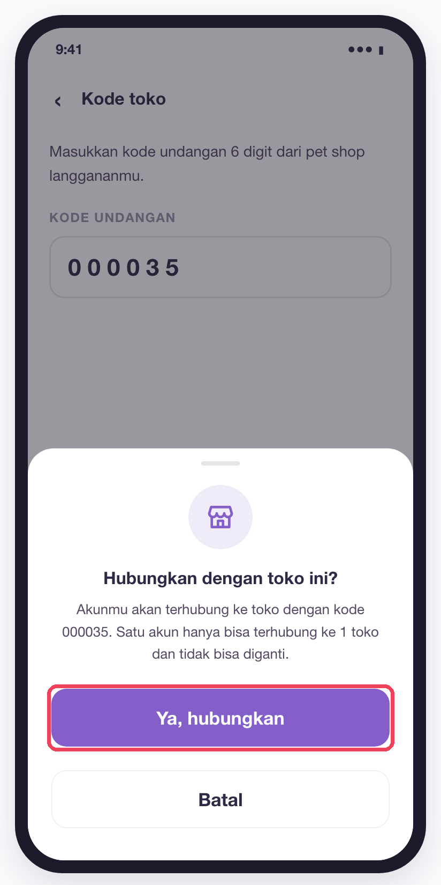
Periksa lagi kode di layar konfirmasi. Jika sudah benar, ketuk Ya, hubungkan. Ketuk Batal jika ingin memeriksa ulang.
在确认弹窗里再核对一遍邀请码，无误后点「Ya, hubungkan」（是的，绑定）；想再检查就点「Batal」（取消）。
一个账号只能绑定一家门店，绑定后不能更换。
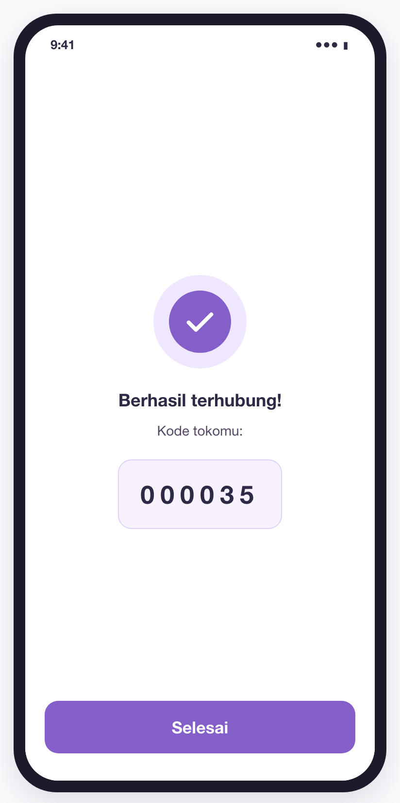
Muncul Berhasil terhubung! beserta kode tokomu. Ketuk Selesai untuk kembali ke Pengaturan.
页面显示「Berhasil terhubung!」（绑定成功！）和你的门店码，点「Selesai」（完成）回到设置页。
查看已绑定的门店码
Setelah terhubung, baris Kode toko di Pengaturan menampilkan kode toko. Ketuk baris itu untuk melihat kode dan tanggal terhubung. Halaman ini hanya untuk dilihat, tidak ada tombol ganti atau putus.
绑定后，设置页「Kode toko」一行右侧会显示门店码；点进去可看到邀请码和绑定日期。此页只能查看，没有更换或解绑按钮。
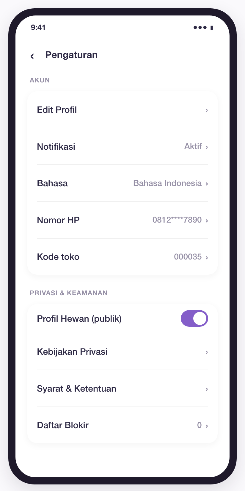
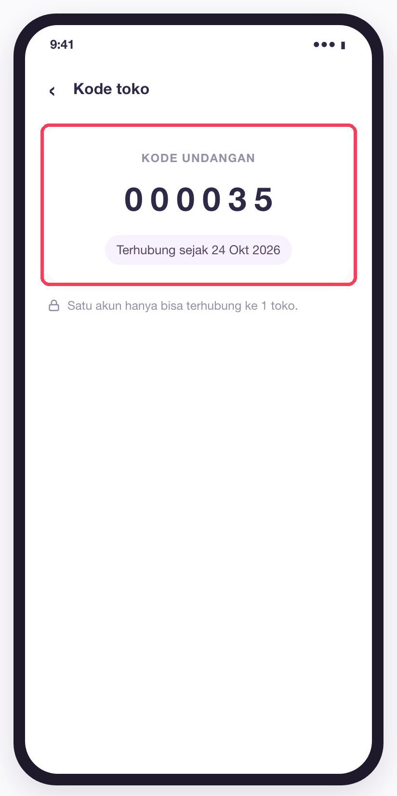
遇到以下提示怎么办
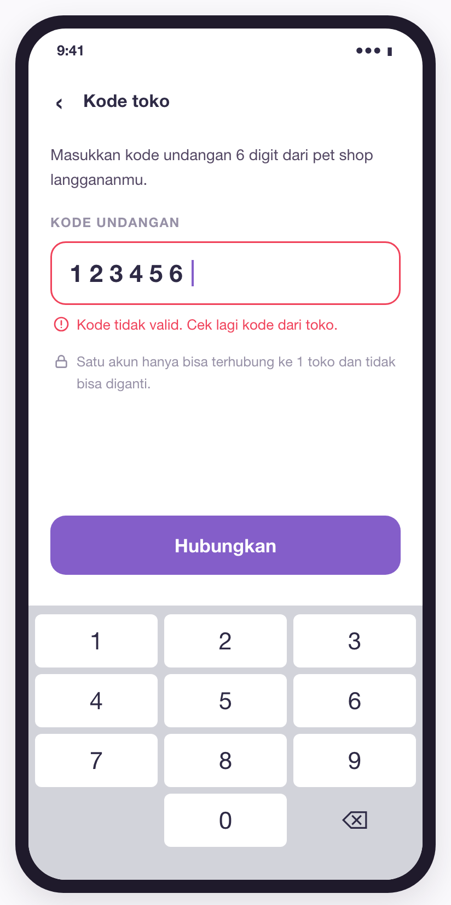
提示含义：邀请码无效，请再核对门店给的码。
Kode salah ketik, atau toko tersebut sedang tidak aktif.
码输错了，或该门店已停用。
Cek ulang kode dengan pihak toko, lalu masukkan lagi.
向门店再确认一次邀请码后重新输入。
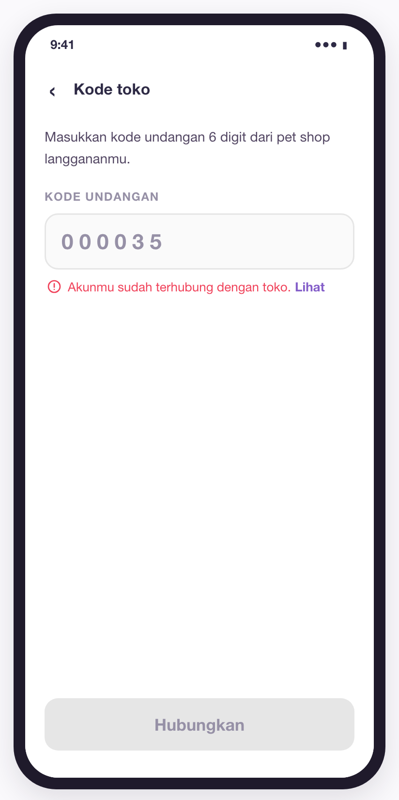
提示含义：你的账号已经绑定过门店。「Lihat」= 查看
Akun ini sudah pernah terhubung ke sebuah toko, misalnya dari HP lain.
这个账号之前已绑定过门店（比如在另一台手机上绑的）。
Ketuk Lihat untuk melihat kode yang terhubung. Toko tidak bisa diganti.
点「Lihat」查看已绑定的门店码；绑定的门店不能更换。
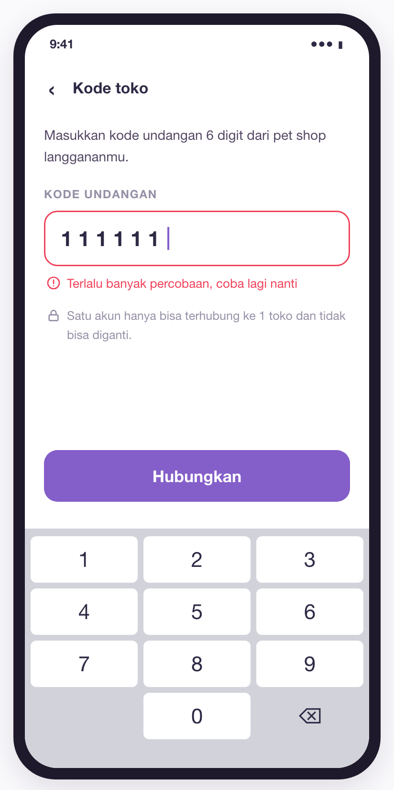
提示含义：尝试次数过多，请稍后再试。
Kode dicoba lebih dari 10 kali dalam 1 jam.
1 小时内提交超过 10 次。
Tunggu sebentar (paling lama 1 jam), pastikan kodenya benar, lalu coba lagi.
等一段时间（最多 1 小时），确认码正确后再试。
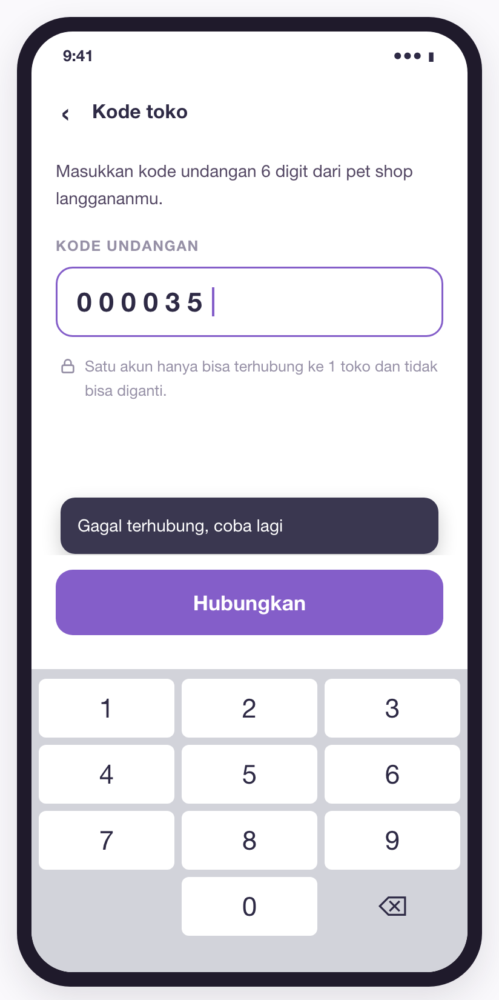
提示含义：绑定失败，请重试。
Koneksi internet bermasalah.
网络连接有问题。
Cek koneksi internet, lalu ketuk Hubungkan lagi. Kode yang sudah diisi tidak hilang.
检查网络后再点「Hubungkan」即可，已填的码不会丢。
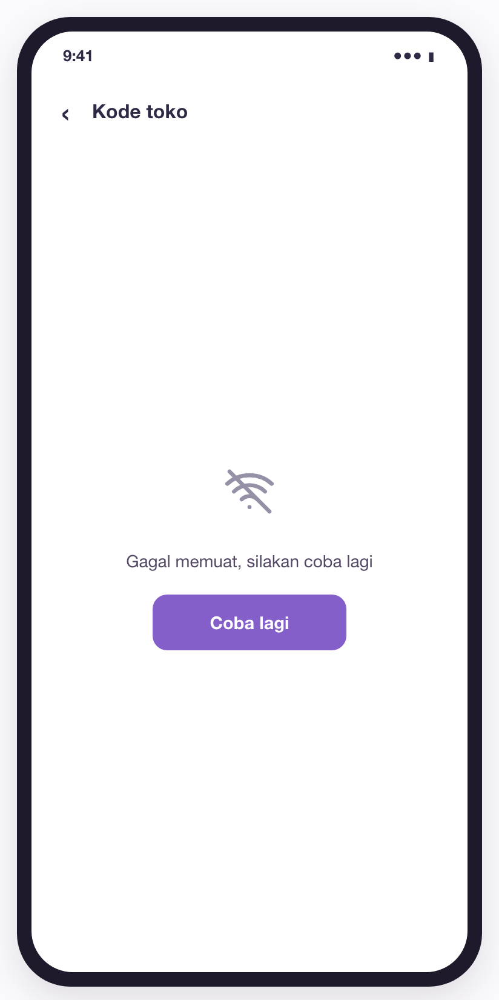
提示含义：加载失败，请重试。
Halaman Kode toko gagal dimuat karena koneksi internet.
因网络问题，门店码页面没能打开。
Cek koneksi internet, lalu ketuk Coba lagi.
检查网络后点「Coba lagi」（重试）。
常见问题